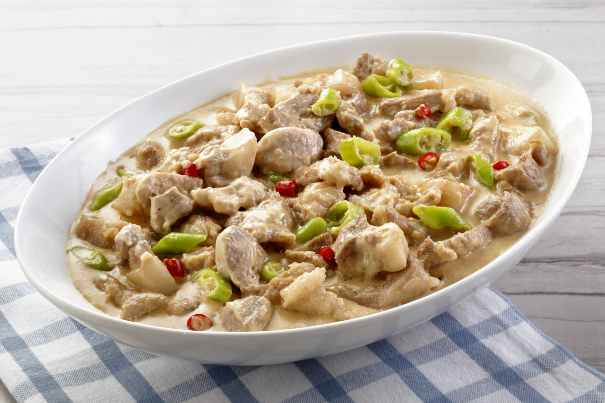

Bicol
Bicol Express
Bicol Express is a famous Filipino dish associated with the Bicol Region. It is made from tender pieces of pork cooked in coconut milk with chili peppers, shrimp paste, garlic, onion, and ginger. It is known for its rich, creamy, savory, and spicy flavor. The dish is traditionally cooked until the coconut milk becomes thick and coats the pork. Bicol Express is commonly served hot with steamed rice.

Gather
Ingredients
- Pork belly, cut into small pieces
- Coconut milk (gata)
- Coconut cream (kakang gata), optional
- Shrimp paste (bagoong alamang)
- Long green chili peppers (siling haba), sliced
- Red chili peppers or bird’s eye chili (siling labuyo), chopped
- Garlic, minced
- Onion, chopped
- Ginger, minced or sliced
- Cooking oil
- Salt and ground black pepper
- Water for simmering
Make it
Recipe
- Cut the pork belly into small bite-sized pieces. Prepare the garlic, onion, ginger, and chili peppers.
- Heat a pan over medium heat and add a small amount of cooking oil. Sauté the garlic, onion, and ginger until fragrant.
- Add the pork and cook until it becomes lightly browned and some of its fat is rendered.
- Add the shrimp paste and mix well with the pork. Cook for a few minutes to combine the flavors.
- Pour in the coconut milk and bring it to a gentle simmer.
- Add the sliced long green chili peppers and chopped chili peppers. Cook over low to medium heat until the pork becomes tender.
- Continue simmering until the coconut milk reduces and becomes thick and creamy. Stir occasionally to prevent the sauce from sticking to the pan.
- Add coconut cream if desired and continue cooking until the sauce becomes richer and thicker.
- Season with salt and ground black pepper to taste. Adjust the amount of chili depending on the desired spiciness.
- Serve hot with steamed rice.